War of the Web
Introduction
War of the Web is a four-player board game designed to address the issue of internet personal data security. Personal data security is now a growing concern where the amount of data stored online is increasing daily while there are many hostile groups trying to illegally access this data for destructive purposes, such as financial gain. User data has become a new currency to many companies, including online shopping and social media platforms, and even governments. Internet consumers can often be found inputting personal information into a variety of websites on a daily basis.
Users
The target (primary) users of this game are internet users between the ages of eight and eighteen, where the core objective is to introduce users aged eight to thirteen to the general idea of data security through a fun and engaging gameplay, and to highlight practical defensive techniques and common hacking schemes for users aged fourteen to eighteen
Secondary and tertiary users of this game include parents of the target users, the government, and antivirus software companies. The game objectives for the parents are to create a fun family-bonding experience while providing the opportunity for parents to further discuss online data security with their children. As for the government and antivirus software companies, the game aims to ultimately reach enough of the demographic to influence an increase in government investment in data security and cause antivirus companies to lower the price of their products.
Features
Rules
Click to view the rules here
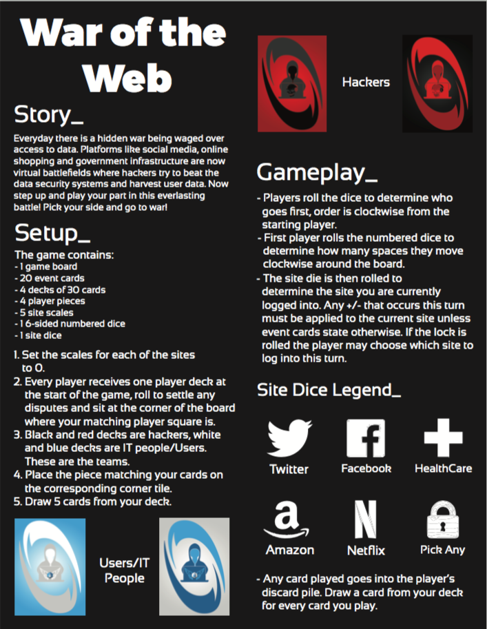 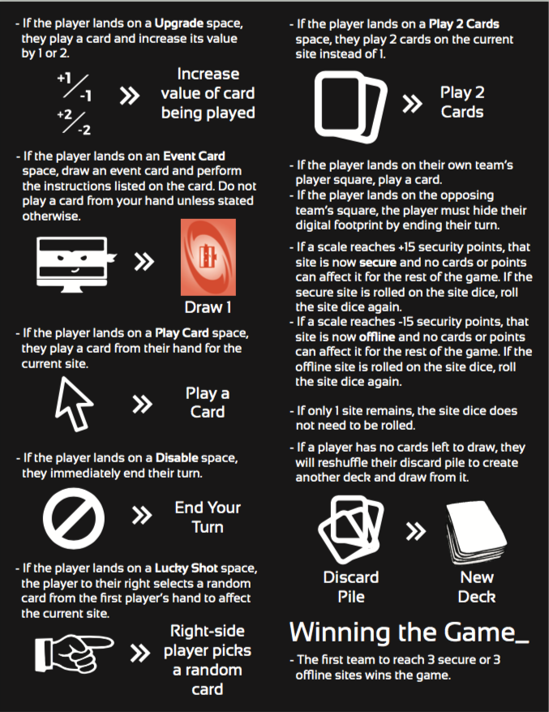
Future
Moving forward, future work required for this game include more user testing, better game pace control, and better design for manufacturing. When playing the game with university-level peers there was an opportunity to observe gameplay and collect user feedback. While the user testing conducted so far has yielded useful feedback including “the informative cards are too complex for the younger audience”, the game has yet to be testing with the actual target audience, who would be internet users aged eight to eighteen. It is projected that one of the greatest challenges would be presenting the educational material in a language that all ages can understand and gain knowledge from. Testing with users of our target age is necessary to learn more about them and make effective improvements. A possible solution is to include the definitions and explanations of the introduced terms for added clarification, as well as providing the more curious users with credible resources for further research.
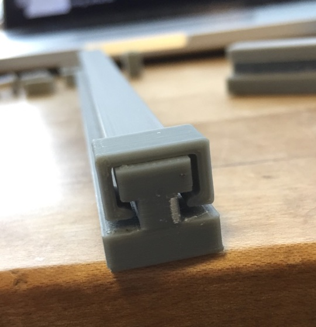 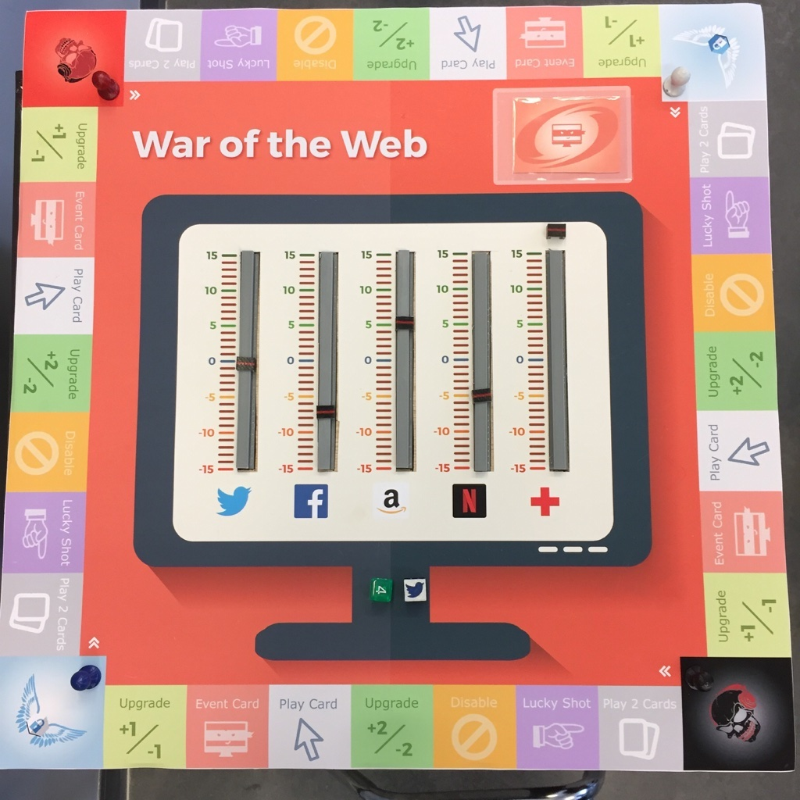
| Project: | Board Game |
| Date: | Winter 2017 |
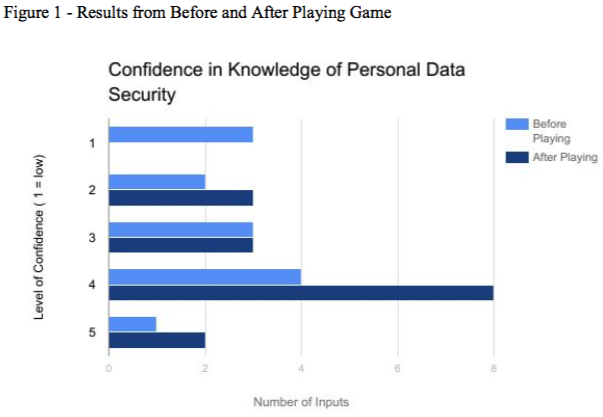
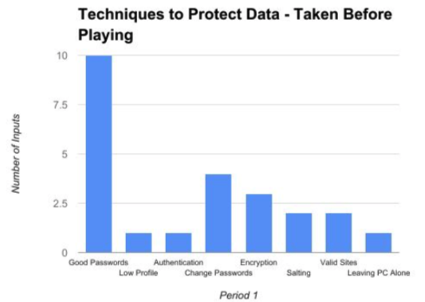
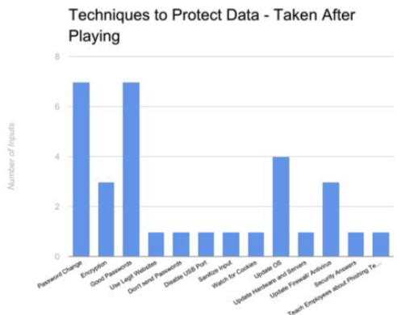
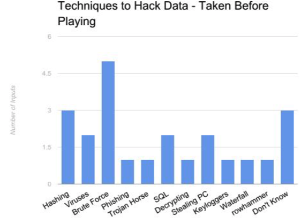
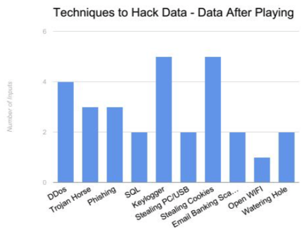
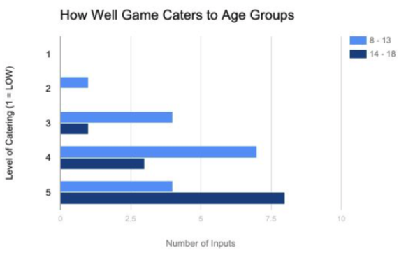
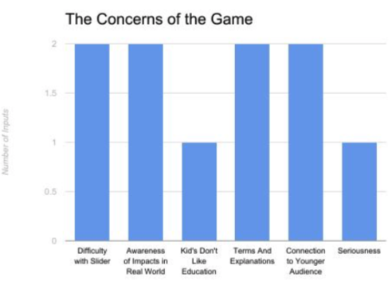
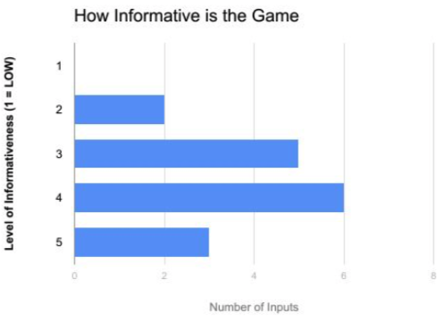